<title>NuriCell Bottom-Left</title>
<meta name="claude:viewport-fit-sides" content="cover">
<link rel="preconnect" href="https://fonts.googleapis.com">
<link rel="preconnect" href="https://fonts.gstatic.com" crossorigin>
<link rel="stylesheet" href="https://fonts.googleapis.com/css2?family=Ysabeau:wght@500;600&family=Instrument+Sans:wght@400;500;600&display=swap">
<style>
  /* Layout: one narrow reading column; the pick first (close-up, then the whole first screen and the phone), then the same idea on three other products, then the plainer version and today for comparison. */
  :root {
    --paper: #f4f1e8;
    --sheet: #fbf9f3;
    --ink: #1b1a17;
    --muted: #5a564e;
    --line: #d9d3c4;
    --gold: #a77b21;
    --display: "Ysabeau", "Iowan Old Style", Georgia, serif;
    --body: "Instrument Sans", "Segoe UI", system-ui, sans-serif;
  }
  @media (prefers-color-scheme: dark) {
    :root:not([data-theme="light"]) {
      --paper: #171613; --sheet: #211f1b; --ink: #ece7dc; --muted: #b3ac9e; --line: #3a3630; --gold: #d6a84a;
      color-scheme: dark;
    }
  }
  :root[data-theme="dark"] {
    --paper: #171613; --sheet: #211f1b; --ink: #ece7dc; --muted: #b3ac9e; --line: #3a3630; --gold: #d6a84a;
    color-scheme: dark;
  }
  body {
    background: var(--paper);
    color: var(--ink);
    font: 17px/1.55 var(--body);
    padding-left: max(16px, env(safe-area-inset-left, 0px));
    padding-right: max(16px, env(safe-area-inset-right, 0px));
    padding-block: 36px 64px;
  }
  main { max-width: 1040px; margin: 0 auto; display: grid; gap: 56px; }
  h1, h2, h3 { font-family: var(--display); font-weight: 600; letter-spacing: -0.01em; text-wrap: balance; margin: 0; }
  h1 { font-size: clamp(32px, 6vw, 48px); line-height: 1.05; }
  h2 { font-size: clamp(26px, 4.4vw, 34px); line-height: 1.1; }
  h3 { font-size: clamp(21px, 3.4vw, 25px); line-height: 1.15; }
  p { margin: 0; max-width: 62ch; }
  .intro { display: grid; gap: 14px; }
  .lede { font-size: 19px; }
  ul { margin: 0; padding-left: 1.1em; display: grid; gap: 6px; max-width: 62ch; }
  .note { color: var(--muted); font-size: 15px; }
  section { display: grid; gap: 18px; padding-top: 28px; border-top: 1px solid var(--line); }
  .head { display: flex; flex-wrap: wrap; align-items: baseline; gap: 6px 14px; }
  .tag {
    display: inline-flex; align-items: center; justify-content: center;
    width: 40px; height: 40px; border-radius: 50%;
    background: var(--ink); color: var(--paper);
    font: 600 20px/1 var(--display);
    flex: none; align-self: center;
  }
  .tag.quiet { background: transparent; color: var(--ink); border: 1.5px solid var(--ink); }
  .pick { color: var(--gold); font-weight: 600; font-size: 15px; letter-spacing: 0.04em; text-transform: uppercase; }
  .score { color: var(--muted); font-size: 15px; }
  figure { margin: 0; display: grid; gap: 8px; min-width: 0; }
  figure img {
    display: block; width: 100%; height: auto; max-width: 100%;
    border-radius: 10px; border: 1px solid var(--line); background: var(--sheet);
  }
  figcaption { color: var(--muted); font-size: 14px; }
  .pair { display: grid; grid-template-columns: minmax(0, 3fr) minmax(0, 1fr); gap: 16px; align-items: start; }
  .stack { display: grid; gap: 14px; }
  @media (max-width: 640px) {
    .pair { grid-template-columns: minmax(0, 1fr); }
    .pair figure:last-child { max-width: 300px; }
  }
  .ask { display: grid; gap: 10px; padding: 22px; border-radius: 12px; background: var(--sheet); border: 1px solid var(--line); }
</style>

<main>
  <section aria-labelledby="built" style="border-top: 0; padding-top: 0">
    <div class="head">
      <span class="tag" aria-hidden="true">C</span>
      <h1 id="built">Built: Title face</h1>
      <span class="score">8/10</span>
    </div>
    <p>These are real screenshots of the built site, not mockups. It's saved on my computer only; the public site hasn't changed yet.</p>
    <ul>
      <li>It's on NuriCell, OPC, Nature Calm and Turmerific. Propolis keeps its own opening.</li>
      <li>Korean, Japanese and Chinese headlines keep their usual weight. The title font has no letters for those languages.</li>
    </ul>
    <figure>
      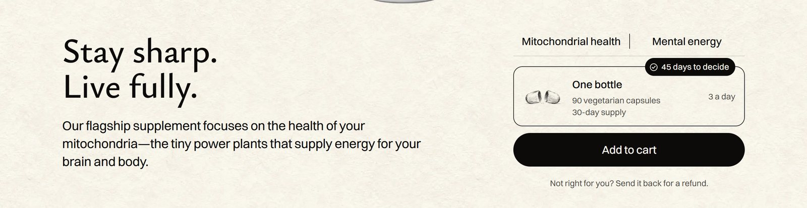
      <figcaption>Close-up of the bottom row.</figcaption>
    </figure>
    <div class="pair">
      <figure>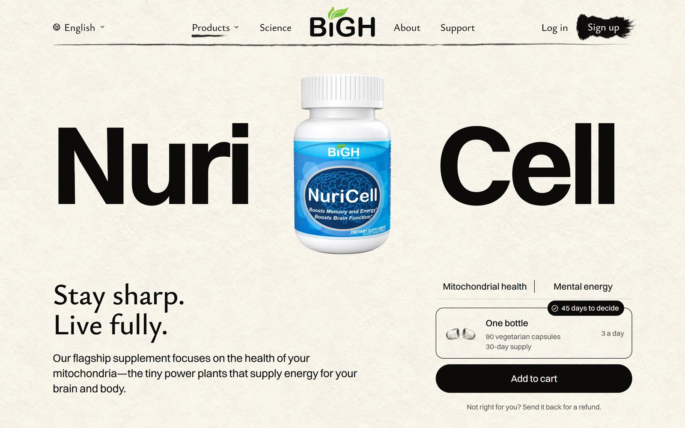<figcaption>Laptop, 1440 wide.</figcaption></figure>
      <figure>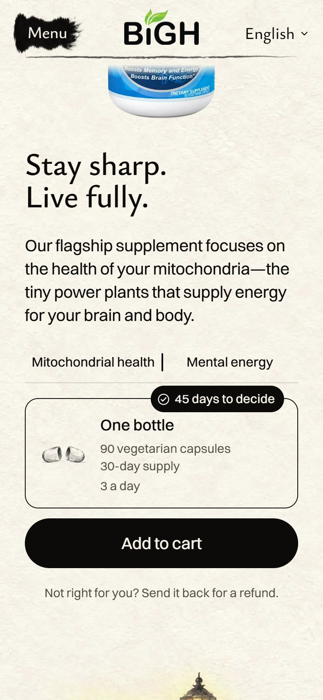<figcaption>Phone.</figcaption></figure>
    </div>
    <div class="stack">
      <figure>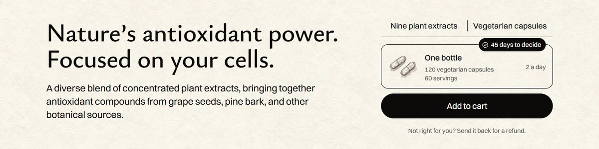<figcaption>Advanced OPC Formula.</figcaption></figure>
      <figure>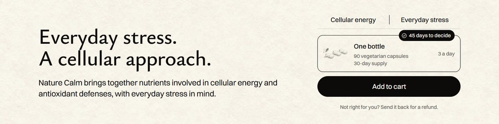<figcaption>Nature Calm.</figcaption></figure>
      <figure>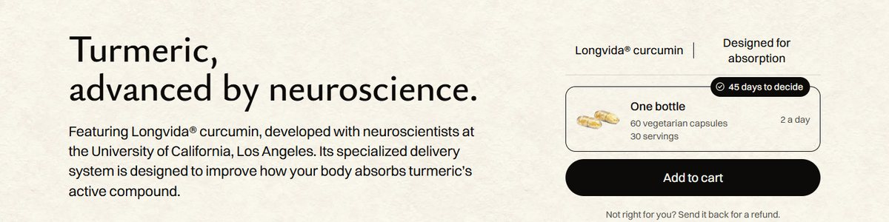<figcaption>Turmerific.</figcaption></figure>
    </div>
    <p class="note">What still holds it back: on Turmerific, the refund line lands right at the bottom of a laptop screen, and on a phone its description runs six lines.</p>
  </section>

  <div class="intro">
    <h2>How we got here: round 2</h2>
    <p class="lede">You were right about Dr. Liu's photo. All five product pages share this first screen, so the fix has to look just as good on every one of them.</p>
    <ul>
      <li><strong>A (Dr. Liu)</strong> is out. Turmerific and Propolis have no scientist chapter at all, so they would look lesser.</li>
      <li><strong>B (what's inside)</strong> is out too. Propolis and Turmerific have one ingredient and Nature Calm has 18, so that row can't look the same everywhere.</li>
    </ul>
    <p><strong>The new rule:</strong> use only what every page already has, the headline and the description.</p>
    <p class="note">Mockups: the live demo pages, changed in the browser. Nothing on the site has changed.</p>
  </div>

  <section aria-labelledby="idea-c">
    <div class="head">
      <span class="tag" aria-hidden="true">C</span>
      <h2 id="idea-c">Title face</h2>
      <span class="pick">My pick</span>
      <span class="score">8/10</span>
    </div>
    <ul>
      <li>The headline is set in Ysabeau, the brush-like title font from the homepage and the menu bar. It now reads as its own voice under the heavy name.</li>
      <li>The description is bigger and black, and runs under the bottle, so the empty space is gone.</li>
      <li>The thin side line is gone.</li>
      <li>The headline starts level with the right side, and the words end where Add to cart ends.</li>
    </ul>
    <figure>
      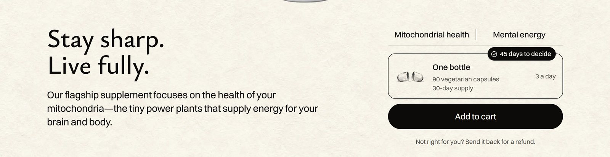
      <figcaption>Close-up of the bottom row.</figcaption>
    </figure>
    <div class="pair">
      <figure><figcaption>Laptop, 1440 wide.</figcaption></figure>
      <figure>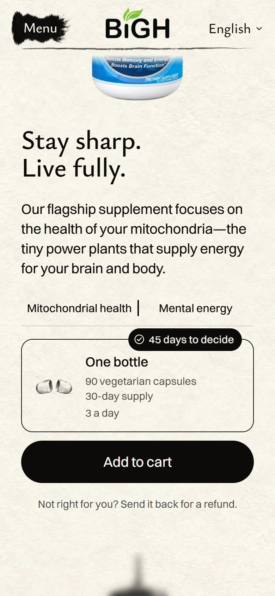<figcaption>Phone.</figcaption></figure>
    </div>
    <h3>The same idea on three other products</h3>
    <div class="stack">
      <figure>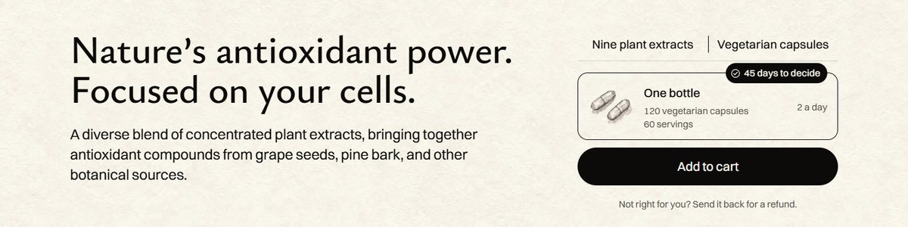<figcaption>Advanced OPC Formula.</figcaption></figure>
      <figure>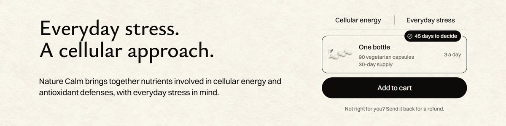<figcaption>Nature Calm.</figcaption></figure>
      <figure>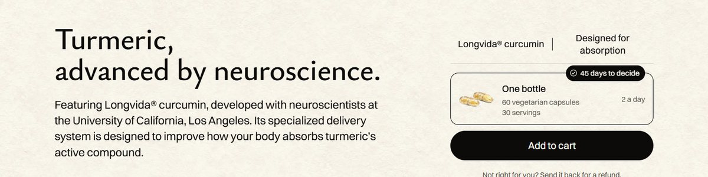<figcaption>Turmerific, the longest words of the five.</figcaption></figure>
    </div>
    <p class="note">What holds it back: on Turmerific, the refund line lands right at the bottom of a laptop screen. On a phone its long description runs to six lines. Green Bee Propolis keeps the opening you approved for it.</p>
  </section>

  <section aria-labelledby="idea-d">
    <div class="head">
      <span class="tag quiet" aria-hidden="true">D</span>
      <h2 id="idea-d">The same, without the new font</h2>
      <span class="score">7.5/10</span>
    </div>
    <p>Here for comparison, so you can see what the font adds. It's the same bigger, black description, but the headline stays in today's font. It fixes the empty space, but the two blocks of words look alike, so it feels more like a standard website.</p>
    <figure>
      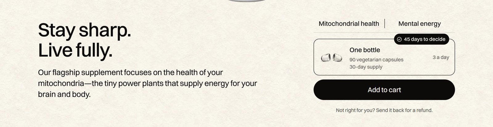
      <figcaption>Close-up of the bottom row.</figcaption>
    </figure>
  </section>

  <section aria-labelledby="today">
    <div class="head"><h2 id="today">Today</h2></div>
    <figure>
      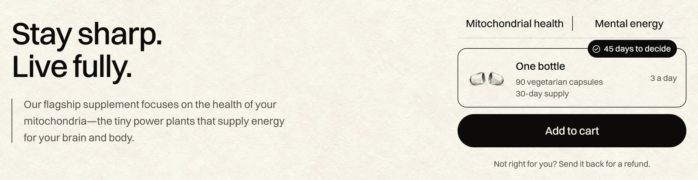
      <figcaption>Close-up of the bottom row.</figcaption>
    </figure>
  </section>

  <div class="ask">
    <h2>C or D?</h2>
    <p>I recommend C. I also tried two other ideas and dropped them. Moving "Mitochondrial health | Mental energy" to the left pushed Add to cart off the bottom of the screen. A row of links to the page's chapters looked like a second menu.</p>
  </div>
</main>
